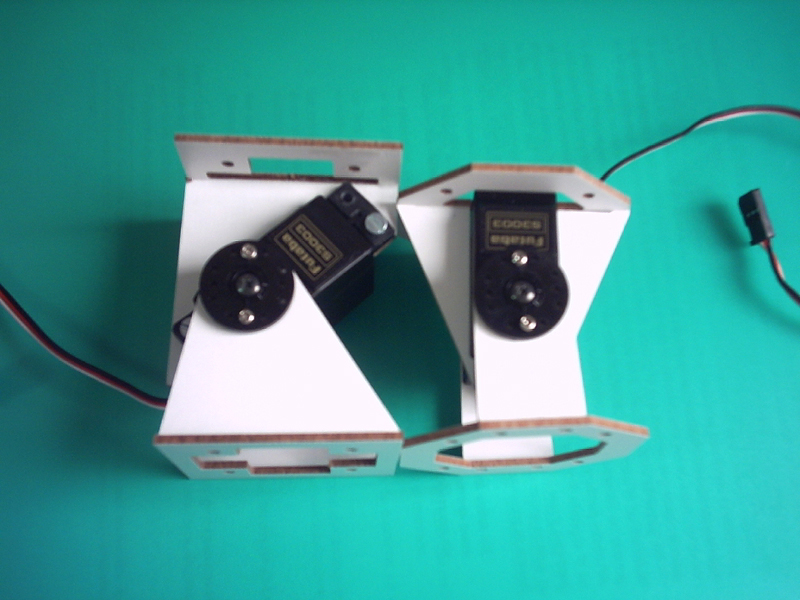
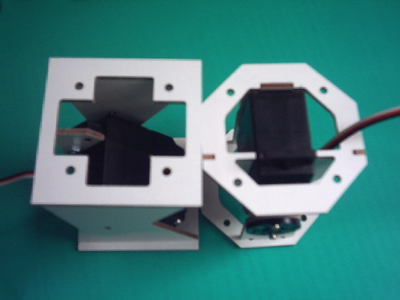

Andrés San-Millán Rodríguez, estudiante de Ingeniería Industrial en la UCLM en Ciudad Real ha diseñado los módulos ORM. Están basados en los Módulos Y1, pero tienen una base octogonal. Tienen una característica muy interesante y es que la oscilación es simétrica.
En esta foto se pueden comparar las bases de ambos módulos

Y en este vídeo se pueden ver en funcionamiento:

Andrés, además ha hecho esta espectacular simulación de los módulos, similar a la que hizo con los módulos Y1.

Andres: Enhorabuena por el trabajo y muchas gracias por enviarme los vídeos y las fotos. Estoy ansioso de ver el robot real moverse 😉